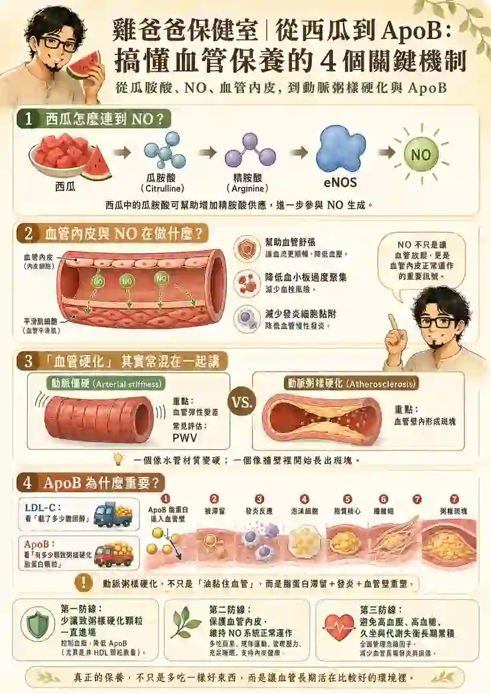

從瓜胺酸、NO、血管內皮，動脈粥樣硬化與ApoB
今天早上，雞爸爸進便利商店時，看到一盒紅通通、冰冰涼涼的西瓜。
腦海裡突然閃過一個念頭：「印象中西瓜是不是有什麼胺酸，對心血管不錯？」
這個問題原本查個三分鐘應該就可以結束...結果查著查著，從西瓜裡的瓜胺酸，一路掉進精胺酸、一氧化氮NO、血管內皮、動脈僵硬、動脈粥樣硬化……
最後還冒出一個雞爸爸以前健康檢查幾乎沒有檢查過的東西：ApoB。
看到這裡，雞爸爸低頭看看桌上的西瓜...等等...我一開始不是只想吃個西瓜嗎？
只是聽說NO對心血管好，卻沒有真的深入理解
雞爸爸對「一氧化氮」這個名詞其實不陌生。以前曾經喝過賀寶芙的夜寧新，當時最有印象的就是：L-精胺酸（L-arginine）可以作為人體製造NO的原料。
而且那時候常會提到1998年諾貝爾生理醫學獎得主 Louis Ignarro，雞爸爸只單純相信，沒有認真研究，只留下了一個很簡單的印象：精胺酸 → NO → 血管放鬆 → 對心血管好。
重新回頭看，才發現西瓜有趣的地方，就是含有L-瓜胺酸（L-citrulline）。瓜胺酸進入人體後，可以增加精胺酸的供應，接著再透過血管內皮的eNOS系統參與NO生成。
於是最簡單的版本就變成：西瓜的瓜胺酸→ 精胺酸→ eNOS→ NO
查到這裡，本來應該已經可以放心拿叉子吃西瓜了。
但是雞爸爸又冒出下一個問題：NO到底為什麼可以保護血管？事情從這裡開始失控。
血管不是水管，內皮才是重點
以前雞爸爸把血管對比宏觀世界的水管，想像得很簡單。年輕的時候軟Q有彈性，年紀大了慢慢變硬，膽固醇再黏一些上去，洞愈來愈小，最後塞住，有點像廚房排水管。
可是人體的血管根本沒有這麼被動，血管最裡面有一層薄薄的細胞，叫做：血管內皮（endothelium），微觀世界裡它不只是「水管內壁」，它其實一直在感受血流，甚至會主動參與：血管收縮與舒張、血小板反應、白血球黏附、發炎、平滑肌活動等很多事情。
而NO，就是血管內皮非常重要的一種訊號。當血流增加時，血液對內皮產生剪切力，健康的內皮可以透過eNOS製造NO。
NO再告訴旁邊的血管平滑肌：可以放鬆一點。所以真正健康的血管並不是：「永遠張得很開。」而是：該放鬆的時候放得開，該調節的時候還調得動。
並且NO也不只跟血壓有關，正常的NO訊號還參與抑制血小板過度聚集、降低部分發炎細胞與內皮的黏附，並幫助血管壁維持比較正常的狀態。
雞爸爸研究到這裡才發現：以前把NO理解成「天然血管擴張劑」，其實有點把它看小了。NO更像是健康血管內皮正常工作的其中一個指標與工具。
所以真正值得保養的，也許不是：「我要想辦法把NO灌高。」而是：「我要讓血管內皮一直有能力正常工作。」
查到這邊，雞爸爸又有新的問題想了解...血管硬化成因真的只是這樣嗎？
我們常說「血管硬化」，其實可能在講兩件事
這是這次雞爸爸覺得特別值得弄懂的地方。平常大家很常認為：血管硬了＝動脈硬化＝血管有斑塊，全部當成同一件事情。其實也不完全一樣，具體應該分為兩件事：
1.Arterial stiffness：動脈僵硬
可以理解為：血管壁本身的物理性質變了。隨著老化、高血壓、糖代謝問題、血管壁膠原與彈性纖維改變等因素，血管失去原本的彈性。研究上常利用脈波傳導速度PWV去評估這種僵硬程度，就是雞爸爸之前健檢的數字。也就是雞爸爸一直以來使用的觀念，可以把它想成：一條橡皮水管的材質本身變硬了。

最棒的一件事情，有些人的PWV（脈波傳導速度）確實可以下降。更精確一點的說法，動脈僵硬包含可逆的功能性成分，也包含較難逆轉的結構性老化。
許多證據顯示血壓控制十分很重要，而更多研究顯示，有氧運動可以有效控制動脈僵硬。
2023年的系統性回顧整理44篇系統性回顧、超過6700人，整體來說有氧訓練可讓PWV下降；不同統合分析大約觀察到0.5～0.75 m/s左右的改善。
2025年另一篇針對正常與高血壓成人的統合分析，平均約11週的有氧訓練後，整體PWV平均下降約0.93 m/s。
2.Atherosclerosis：動脈粥樣硬化
這種的重點是：血管壁的內部像發生化學反應，內壁開始形成斑塊。
兩件事情彼此會互相影響，也很常同時存在，但不是完全相同的問題。一個比較像：水管本身失去彈性。另一個比較像：水管的牆壁裡開始蓋違建。
如果從中文字「血管硬化」，其實無法把兩件事情一起說清楚。
而雞爸爸又想再鑽深一點的，是第二個問題：那些粥樣斑塊，到底怎麼長出來？
動脈粥樣硬化，不是膽固醇像豬油一樣黏上去
以前在雞爸爸腦袋裡的版本大概是：膽固醇太高、油黏在血管壁、愈積愈厚、血管塞住。非常簡單明瞭，不過實際上也太過簡單。現在醫學對動脈粥樣硬化的理解，比較接近是：帶有ApoB的致粥樣硬化脂蛋白顆粒，穿過血管內皮，進入並滯留在動脈壁內。
接下來，身體會把這些卡住的脂蛋白當成「需要處理的麻煩」，於是派出免疫細胞進場清理。這些免疫細胞會吞掉脂質，慢慢變成所謂的泡沫細胞。如果這樣的情況一直發生，血管壁裡就會愈積愈多脂質、細胞殘骸和發炎反應，最後形成斑塊。
為了把這些東西包起來，血管壁外圍還會長出一層像保護殼一樣的東西，叫做纖維帽。久了之後，就變成比較成熟的粥樣斑塊。

所以動脈粥樣硬化其實不是單純：「油太多，把管子塞住。」
而是一整套：脂蛋白滯留＋免疫發炎＋血管壁重塑。
雞爸爸突然想到之前研究發炎時一直在想的問題：發炎到底是壞人，還是消防隊？
放到血管裡似乎更容易理解，免疫細胞一開始當然是來處理問題，可是如果ApoB脂蛋白每天還是一車一車送進血管壁…消防隊就永遠沒有下班的一天。
這時候雞爸爸開始一直看到同一個字：ApoB。
ApoB是什麼？原來LDL還可以換一個角度看
ApoB，全名是：Apolipoprotein B，載脂蛋白B。
雞爸爸找到一個感到理解的譬喻，是把血液裡的脂蛋白想成一台台載著脂質的貨車。
一般健檢最熟悉的LDL-C，比較像在問：「這些LDL貨車總共載了多少膽固醇？」
而ApoB比較接近另一個問題：「到底有多少台具有致粥樣硬化能力的貨車在路上？」
LDL、VLDL、IDL、Lp(a)等致粥樣硬化脂蛋白，都是屬於ApoB-containing particles。所以測ApoB，可以比較接近估計：這群有機會進入血管壁的顆粒到底有多少。
為什麼這兩個概念不完全一樣？假設：甲有10台貨車，每台載很多膽固醇。乙有20台貨車，但每台只載一半。兩人的膽固醇總量可能差不多，所以LDL-C看起來可能很接近。
可是如果問：有多少台車每天有機會撞進血管壁？乙比較多。
這就是為什麼有些人的LDL-C與ApoB可能出現不一致。
尤其當三酸甘油脂偏高、代謝症候群、糖尿病、胰島素阻抗等狀況存在時，只看LDL-C，有時候不一定能完全反映致粥樣硬化顆粒負荷。
雞爸爸看到這裡，腦袋突然回到以前每年的健康檢查裡面有總膽固醇、HDL-C、LDL-C、三酸甘油脂。這些每次都看。
ApoB？以前根本沒注意。於是雞爸爸下一個搜尋變成：「健檢可以加驗ApoB嗎？」
……
等一下。
早上不是只買了一盒西瓜嗎？
查到ApoB，NO突然從主角變成了配角
這反而是雞爸爸今天最有收穫的地方。一開始想的是：「要怎麼增加NO，保護血管？」所以注意力全部放在：西瓜、瓜胺酸、精胺酸、菠菜、甜菜根哪個東西比較會增加NO？可是把動脈粥樣硬化整張地圖攤開之後才發現：NO當然重要，但它只是其中一條防線。
如果血管內皮是一座城牆，NO很像城內重要的防禦系統。
可是如果血液裡長期存在大量ApoB脂蛋白顆粒，一直有機會進入血管壁，那等於攻城車每天源源不絕的在攻打城牆。再加上：高血壓、高血糖、抽菸、內臟脂肪、缺乏運動、慢性代謝問題，都可能讓血管環境變得更不理想。
這時候如果只想著：「我要多吃一點什麼增加NO。」就像是不管外面到底有多少軍隊在撞門，只在乎每天內部防禦做得好不好...有點沒抓到重點...
所以「血管保養」應該拆成兩個層次：
第一層：減少致粥樣硬化顆粒的長期暴露
這裡要看的是：LDL-C、non-HDL-C、ApoB，以及某些人的Lp(a)等。
第二層：讓血管內皮維持正常功能
這裡才包括：血壓、血糖、運動、抽菸、氧化壓力、睡眠、代謝健康，以及NO系統。
兩邊都很重要，而且不能只挑自己比較喜歡研究的那一邊。
那已經形成的斑塊，也可以「逆轉」嗎？
既然都已經挖這麼深，雞爸爸又忍不住想問：如果血管已經有粥樣斑塊，還救得回來嗎？答案不是單純的「可以」或「不可以」。
醫學上所謂的斑塊逆轉，通常不是：把血管洗乾淨，重新恢復十八歲。真正希望做到的，通常包括：斑塊不要繼續長、脂質成分減少、發炎降低、纖維帽變厚，斑塊變得更穩定。甚至部分人的斑塊體積能夠出現一定程度的回縮。
這也是為什麼在已經有冠狀動脈疾病的人身上，積極降低LDL／ApoB-containing lipoproteins，除了降低未來心血管事件，也可能讓某些斑塊往比較穩定、甚至部分回縮的方向發展。
而且非常重要的是：所謂「逆轉」，重點不一定是把所有東西消失。一塊比較穩定、不容易破裂的斑塊，有時候比一塊脂質很多、發炎活躍、纖維帽很薄的斑塊安全得多。
真正的心血管預防，不是追求：「把血管洗乾淨。」而是讓疾病別再往危險的方向前進。
針對血管保養的三道防線 小妾有什麼建議呢
研究到這裡，雞爸爸終於把整件事情整理成比較能理解的版本，小妾也提出了一些建議：
第一防線：少讓致粥樣硬化顆粒一直進場
具體作法，是管理：LDL-C、non-HDL-C、ApoB。
若有家族史或需要進一步評估，Lp(a)也值得知道，要減少動脈粥樣硬化的「原料供應」。
第二防線：保護血管內皮
具體作法，是控制：血壓、血糖、不抽菸、規律運動、睡眠與代謝健康。
讓內皮仍然能正常產生與利用NO。西瓜的瓜胺酸、深綠色蔬菜或甜菜根中的硝酸鹽，也可以放在這一層理解，但它們是加分項，而不是救世主。
第三防線：不要讓整個身體長期待在壞環境
具體作法，是避免內臟脂肪過高、避免久坐、避免高糖飲食或大量精製食品、睡眠不足、長期代謝異常。
這些事情不一定哪一天突然把血管弄壞，可怕的是：它們可以每天一點點。而血管真正面對的，本來就是幾十年的累積。
以前研究保健，總是在問「我要吃什麼？」
雞爸爸回頭想想，以前對保健的思考方式其實很直覺，聽到魚油對心血管好：吃魚油。
聽到左旋精胺酸可以增加NO：補左旋精胺酸、知道西瓜有左旋瓜胺酸：那多吃西瓜？
好比人體是一座倉庫，少什麼，就補什麼。
可是愈深入研究，愈覺得：人體不是倉庫，是一個環境。
你每天有多少ApoB脂蛋白在血液裡跑？血糖高不高？血壓穩不穩？腰圍是不是有超標？有沒有運動？睡得好不好？血管內皮每天面對的是什麼？
這些東西累積二十年、三十年，可能遠比某一天吃進多少瓜胺酸重要。
所以雞爸爸現在比較想問的，已經不是：「我要再吃什麼？」
而是：「我的身體現在，到底處在什麼樣的環境？」
西瓜最後吃進肚子裡，腦袋裡多了一堆問題
研究一大圈之後，雞爸爸終於把搜尋頁面關掉，桌上的西瓜已經沒有剛買回來那麼冰了。拿叉子插了一塊，恩，果然很好吃。
西瓜沒有錯，瓜胺酸也是真的有意思，NO依然是血管生理裡非常重要的一塊。
只是雞爸爸現在不會再只想問：「所以吃西瓜能不能保護血管？」
而會改成：「我要怎麼讓自己的血管，長期生活在比較好的環境裡？」
兩個問題看起來只差一點，後面看到的世界卻完全不同。
因為對血管來說，真正重要的可能不是：今天多吃了一塊西瓜。
而是：這二十年、三十年，它每天遇到的是什麼。
想到這裡，雞爸爸又吃了一塊，突然覺得今天這盒西瓜好像有點划算，只付了一盒水果的錢。卻附贈了：瓜胺酸、精胺酸、NO、血管內皮、動脈僵硬、動脈粥樣硬化、泡沫細胞、LDL，還有一個下次健康檢查想加驗的—ApoB。
感謝小妾支援，只是感覺小妾可能很想問：「可是雞爸爸...你這西瓜是不是挖太深了。」
【雞爸爸保健室溫馨提醒】雞爸爸和小妾整理研究健康議題的生活筆記，不能取代醫師診斷與個人化治療。血脂、ApoB、Lp(a)與心血管風險，需要搭配年齡、血壓、血糖、家族史、抽菸與既有疾病等因素一起判讀，使用前應詳閱公開說明書。
